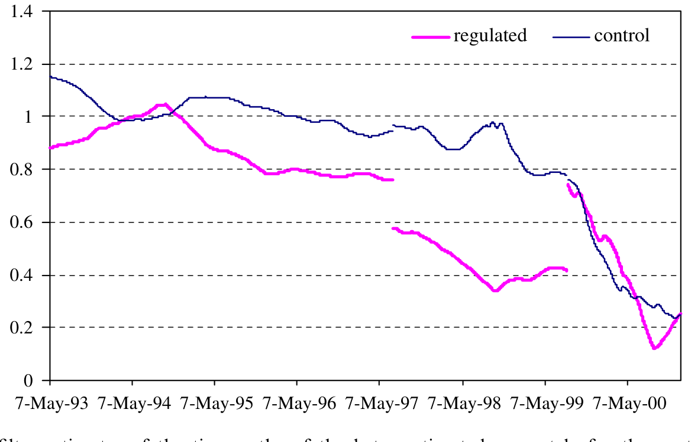
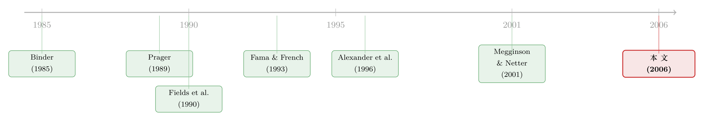

监管能不能「调」走风险？——一桩半路夭折的英国管制改革，留下了一个干净的实验
本文读的是 Grout & Zalewska (2006, Journal of Financial Economics)：英国政府在 1997–1999 年间一度打算把所有受管制公用事业的定价方式，从「价格上限」改成「利润分享」，后来又放弃了。理论说，这种只转移风险、不转移财富的改革，应当把受监管公司的系统性风险 beta 压低到原来的一个分数 g（g < 1）。作者用卡尔曼滤波等三种方法在单因子与 Fama-French 三因子模型上检验，发现这条预测被数据强烈证实——而同期美国的对照组合纹丝不动。
1 一个几乎无法被检验的命题
先抛一个看似简单、却几乎没人能干净回答的问题：监管，到底是怎么改变一只股票的风险的？
我们对「监管改变估值」这件事已经知道得很多。竞争法、价格管制、投资者保护、准入限制……任何一条规则落地，市场都会立刻在价格上反应出来，相关的事件研究 (event study) 汗牛充栋。但「监管改变风险」——注意，是系统性风险、是 beta，而不是股价水平——的证据却出奇地少。
为什么少？作者一针见血：因为几乎找不到「干净」的案例。现实里绝大多数的监管变动，同时在转移财富和转移风险：一道新规既改了谁该拿多少钱，又改了这笔钱有多不确定。两件事搅在一起，你根本没法把「风险效应」单独拎出来看。更糟的是，Binder (1985) 早就指出，重大监管改革做事件研究有三宗罪：没有唯一的公告日；有人受益有人受损、方向不一；同行业公司在同一时点一起被冲击，没法和行业自身的冲击分开。
于是这成了一个「人人都想知道答案、却几乎无法被检验」的命题。
而这篇论文真正的运气（以及功力），是找到了一个只转移风险、不转移财富的极罕见样本。
2 一场半路夭折的改革，恰好是天赐的实验
故事发生在 1990 年代的英国。撒切尔时代的私有化浪潮把三十多家公用事业公司——电信、电力、燃气、供水、机场——推上了伦敦交易所，它们都受「价格上限 (price-cap)」监管，也就是著名的 RPI-X：未来若干年价格只能按通胀率减去一个调整因子 X 来涨。这套机制的妙处在于，它刻意去模仿竞争：公司若能比预期更省成本，就能把多赚的留到下次价格复审为止；若经营不善，就自己承担亏损。换句话说，价格上限把竞争市场里的风险和回报，都还给了公司。
接着，一个自然的问题是：如果政府想削减这种风险，会怎么做？
1997 年新工党上台，6 月 30 日发布了公用事业全面审查的正式咨询文件，明确要求各行业监管者表态：要不要改用「利润分享 (profit sharing)」。利润分享是介于「价格上限」和老式「回报率管制 (rate-of-return regulation)」之间的折中——公司的盈亏要按事先规则和消费者分摊。这意味着把一部分随市场起落的风险，从股东身上转移给了用户。
然后，戏剧性的地方来了。这场改革吵了整整 25 个月，财政大臣换了人、首相据传都要亲自否决，到 1999 年 8 月 12 日，电力公司的详细草案同时公布、里面完全没有利润分享的影子——作者据此判定，从这一天起，利润分享在英国已不再是一个可信的结局。2000 年《公用事业法》最终通过，一字未提利润分享。
但真正关键的一步在于：这是一次只动风险、不动财富的改革，而且半路夭折了。
- 它只转移风险：利润分享的设计初衷就是在股东与消费者之间分摊盈亏波动，而非直接没收一笔钱。作者还专门论证，杠杆变化无法解释观察到的风险下降。
- 它普遍适用：覆盖机场、电力、燃气、电信、供水所有受监管行业，所有公司方向一致——于是 Binder 的第二、第三宗罪（选择性受损、行业混淆）被绕开了。
- 它有明确的起止：1997 年 7 月 1 日预期开启，1999 年 8 月 12 日预期终结。
于是我们得到了一段长约两年的「利润分享预期期」。理论预测非常干脆：在这段时间里，受监管公司的 beta 应当显著低于控制组合；改革一黄、预期一散，beta 又该弹回去。这是一个有方向、有时点、有对照的预言——剩下的，就是去数据里看它兑不兑现。
注意这里的识别逻辑跟普通事件研究反着来。事件研究关心「某一天股价跳了多少」，需要精确的公告日；而这篇文章关心的是「某一段时间里风险是不是更低」，对单日噪声并不敏感。所以「没有唯一公告日」这个老大难，在这里反而不太要紧。
3 一个三行就能讲完的模型
这篇论文的理论部分短得可爱，却正是它的骨架。我们一步步来。
设公司在利润分享下的利润为 \(\hat{p}\)，它被表达成围绕一个目标利润 \(p^*\) 的「受限偏离」：
$$\hat{p} = p^* + g(\tilde{p} - p^*)$$
这里 \(g < 1\) 是公司在超过目标利润时被允许留下的比例，\(\tilde{p}\) 是该公司在价格上限下本会赚到的利润。把它整理一下，就得到全文的中心关系式：
$$\hat{p} = (1-g)p^* + g\,\tilde{p} \tag{1}$$
这一步的直觉是：目标利润 \(p^*\) 是被保证的、无风险的（对应回报率管制的结果），\(\tilde{p}\) 是随市场起落的、有风险的（对应价格上限的结果）。利润分享下的利润，不过是这两者的一个加权平均。权重 \(g\) 越小，意味着分享得越多、留给自己的风险越少。
Eq.(1) 已经足够支撑全部实证了——它说，无论是什么因子在定价，公司在利润分享下对任何因子的暴露，都应当是原来的 \(g\) 倍。但为了把直觉讲透，作者给了一个单因子的例子。
机制很朴素：市场指数上涨 → 财富与永久收入上升 → 消费上升 → 受监管公司的盈利上升。于是公司价值和市场之间有正相关，而这个相关性的大小，取决于它面对哪种价格管制。假设总需求依赖于总财富 \(W\)（即消费者效用满足「Gorman 极坐标形式」），价格上限下的利润为：
$$\tilde{p} = p\,x(p,W) - c\big(w, x(p,W)\big)$$
Gorman 形式给出线性的总需求：
$$x(p,W) = a(p) + b(p)W$$
再设成本由固定成本 \(F\) 与边际成本 \(c\) 构成，代入得：
$$\tilde{p} = (p-c)\big(a(p) + b(p)W\big) - F$$
那么在 CAPM 框架下，价格上限公司的系统性风险就是：
$$\beta_i = \frac{\mathrm{cov}(\tilde{p}, W)}{\sigma_W^2} = (p-c)\,b(p)$$
这一步成立，是因为 \(\tilde{p}\) 里只有 \(b(p)W\) 那一项随 \(W\) 波动，其余都是常数；求协方差时常数自动消掉。
最后，临门一脚。 因为目标利润 \(p^*\) 是事先固定的，\(\mathrm{cov}(p^*, W) = 0\)。于是把 Eq.(1) 拿来对 \(W\) 求协方差：
一句话：利润分享的 beta，是价格上限 beta 的 \(g\) 分之一（\(g<1\)）。分享得越多、\(g\) 越小，两种制度下的 beta 差距越大。改革一旦从价格上限转向利润分享，受监管公司的系统性风险就该按比例缩水。
这就是全文要去数据里验证的那条预言。漂亮的地方在于：它不是一个含糊的「风险会下降」，而是一个有结构、有方向、有可证伪含义的点预测。
4 怎么估一个「会动」的 beta
预言里 beta 是随时间变的——预期期内低、之外高。要捕捉这种「先降后升」的形态，普通的全样本 OLS 显然不够，你需要让 beta 自己「会动」。
作者的主力武器是 卡尔曼滤波 (Kalman filter)：把 beta 当成一个随时间演化的隐藏状态去递归估计，从而画出它的时间路径。为稳健起见，他们还配了另外两套：带 White 异方差一致标准误的 OLS（OLS WHC），以及带 GARCH(1,1) 效应的极大似然估计。模型则同时跑单因子市场模型和 Fama-French 三因子 (FF3F) 模型。
（关于「让 beta 会动」这件事本身的价值，可参见《时变的 beta，被低估了二十年的风险》；卡尔曼滤波在分离基金经理「择时」与统计假象上的用法，则见《会动的 beta：基金经理的「择时本事」，是真的，还是统计模型替他造出来的？》。）
数据也讲究。样本期是 1993 年 5 月 1 日到 2000 年 12 月 29 日，全部取自 DataStream、经股息调整，大多数公司有 1,938 个日度对数收益。核心样本是 15 家私有化的受监管公司 与 18 家不受监管的控制公司；为了证明这段风险下降是「英国特有」而非全球性需求供给波动所致，作者又用英美对应行业各构了一组组合作横向对照。选这个起止点，是在「尽量长的价格上限区间」和「尽量多的可分析公司数」（合并、拆分会随样本拉长而吃掉公司数）之间做的权衡。
5 数据兑现了预言
结果令人信服。
先看图。卡尔曼滤波估出的时变 beta 路径上，受监管组合在「利润分享预期期」里出现了一段清晰可辨的下沉，而控制组合没有。更妙的是，这段下沉的起点和终点，几乎与作者事先独立确定的 1997 年 7 月 1 日、1999 年 8 月 12 日两个日期对上了——也就是说，数据是反过来给这两个日期背书的。这个效应无论是对全样本、还是对「前/中/后」三个子样本分别做滤波，都稳健存在，甚至在单家公司层面也看得到。

Figure 1: Kalman filter estimates of the time paths of the betas estimated separately for the portfolios of the
再看显著性。用 OLS WHC 和 ML-GARCH(1,1) 估计，利润分享虚拟变量对受监管组合 beta 的影响在 1% 水平上显著，且几乎在每一家公司层面都显著。换句话说，「风险下降」不是少数几家公司拖出来的平均假象。
那对照组呢？这是识别的命门。结果是：在英国吵得不可开交的那段时间里，美国对应组合的市场风险毫无变化——这正是我们想要的，说明英国受监管公司的 beta 下沉，不能用「全世界的需求供给都变了」来解释。
不过，作者诚实地报告了一处插曲：1999 年年中到 2000 年底，美国两个组合的 beta 也显著下降了，而且这跟英国所有组合同期的形态一致。这会不会动摇结论？不会——因为检验依赖的是组合之间的差异，而非某一组的绝对水平。作者顺手给出了这段共同下降的猜测：电子商务「泡沫」（这一点与 Schwert (2002) 对世纪之交纳斯达克异常波动的记录相呼应），并给出了为何会观察到这一效应的证据。
最后是那个「附带的、却很有意思」的贡献。一般检验 Fama-French 因子是否多余，是看它们能否跨公司、跨时间地解释收益；而这篇文章反其道行之——它预先从政策和理论里推出了「一个特定因子暴露应当在一个特定时段、对一组特定公司下降」的效应，再去看哪些因子能把这个效应「接住」。结论是：三个 FF 因子在捕捉这一预测效应上都显著，其中市场因子最清晰、GARCH 设定下尤其干净，而 HML 因子只在 10% 水平上显著。把这看成一次有方向的「实验」，它为「这些因子到底有没有用」提供了一个不同寻常的旁证。
6 文献脉络
把这篇文章放回它所处的研究长河里，脉络相当清楚。
最早，人们关心的是「监管对估值（财富）的影响」，并很快意识到用股价数据做这件事的方法论陷阱——Binder (1985) 系统梳理了监管事件研究的三大难题，Prager (1989) 用州际商业法和铁路业演示了如何用股价度量监管效果，Fields et al. (1990) 则借加州 103 号提案研究了监管改革的财富效应。这一支始终绕着财富转移打转。
接着，资产定价的工具箱被重新装备。Fama & French (1992, 1993) 把横截面收益归结到市场、规模、价值三个因子上，给后来所有「风险该怎么量」的讨论提供了基准语言。

然后，私有化浪潮把「受监管公司」做成了一个庞大且全球性的资产类别——Megginson & Netter (2001) 的综述、以及 Megginson (2005) 给出的 \(3.24\) 万亿美元、占全球股市 18.2% 的体量，让「监管如何影响这些公司的风险」从学术好奇变成了投资组合与政策设计的现实问题。与风险最贴近的，是 Alexander et al. (1996) 的国际横截面证据，它已经隐约显示 beta 会随管制形式不同而不同。
而这篇论文所处的位置，正是这条河里一直缺的那一环：它不去看财富，而专攻风险；它不靠横截面相关，而靠一次有方向、有时点、有对照的准实验。它把「监管改变 beta」这件以往无法干净检验的事，第一次摆到了一个能被证伪的位置上。
7 评论与延伸（Q&A + 研究方向）
(a) 几个可能的疑问
Q：所谓「只转移风险、不转移财富」，真的成立吗？利润分享难道不会让股东少赚钱？
这是全文识别的命门，作者的论证是：利润分享的制度设计是分摊盈亏波动而非一次性没收，理论上它改变的是利润的方差结构而非期望水平；而风险效应（beta 下降）又能被独立地度量出来。当然这只是「近似干净」——若市场认为改革附带了系统性的财富再分配，估值水平也会动。作者把火力集中在 beta 上，并论证杠杆变化无法解释下降，正是为了把风险这条线尽量从财富里剥出来。
Q：1997 年 7 月 1 日和 1999 年 8 月 12 日这两个日期，是不是「事后挑」出来让结果好看的？
作者强调这两个日期是事先根据政府文件和事件（开启咨询、电力草案公布）独立确定的，而非从 beta 路径上反推。更有说服力的是，卡尔曼滤波估出的 beta 下沉自发地与这两个日期吻合——是数据给日期背书，而不是日期去迁就数据。这是这篇文章最漂亮的一笔。
Q：美国对照组在 1999–2000 年也跟着降，这不正说明英国的下降也可能是全球因素？
关键在于检验对象是组合之间的差。利润分享预期期（1997 年中至 1999 年中）里，美国组合是平的、英国受监管组合在下沉，差异显著；而 1999 年下半年起两边的共同下降（被归因于电商泡沫）是同向同步的，不会制造出英美之间的虚假差异。所以共同下降削弱不了核心识别。
Q：为什么市场因子那么清晰，HML 只在 10% 上显著？
理论 Eq.(1) 说公司对所有因子的暴露都该缩成 \(g\) 倍，但现实里这次冲击主要是通过「市场—财富—消费—盈利」这条宏观链条传导的，对市场因子的作用自然最直接、最强。HML 反映的是价值/成长维度，与这次纯粹的风险再分配关系较弱，所以信号弱、只够到 10%。这反过来也算一种合理性检验。
Q：用卡尔曼滤波估时变 beta，会不会「想看到什么就估出什么」？
这是时变参数模型的通病。作者的防御是多方法交叉验证：卡尔曼滤波负责画形态，OLS WHC 和 ML-
GARCH(1,1)负责给显著性，三者结论一致；再加上事先设定的日期与估计出的拐点自洽。单靠滤波确实容易过拟合，但三套证据叠在一起就硬气多了。
Q：这对「Fama-French 因子到底是不是真风险」的争论意味着什么？
它提供了一个少见的角度。多数检验问「因子能不能解释收益」，本文问「当我们预先知道某个因子暴露该在某时段下降时，因子模型接不接得住」。三个因子都接住了（市场最强），这是对因子作为风险暴露而非纯统计拟合的一个正面旁证——尽管它只是一次性的实验，不能一锤定音。
(b) 几个可能的研究问题与提案
1. 把「利润分享」实验搬到公司债市场。 - 【经济故事】利润分享削减的是盈利相对市场的波动，这不仅压低股票 beta，也应当压低违约概率的系统性成分，从而收窄受监管公司的信用利差、压低其债券的市场 beta。股与债同源于同一现金流，按理该同步反应。 - 【可行性】中。英国公用事业在 1990s 的公司债数据较薄、二级市场流动性差是硬约束；可考虑用 CDS（若有）或一级发行利差近似。识别沿用本文的预期期日期，做股、债 beta 的「双资产」差分检验。
2. 同一冲击下，外资持有人是否反应更快？ - 【经济故事】利润分享预期降低了受监管公司的系统性风险，对国际分散化组合而言，这类「低 beta、强现金流」资产的吸引力会上升。若能观察到改革预期期内外资持股比例的相对变动，就能把「风险定价」和「资金流」连起来。 - 【可行性】中。需要公司层面的外资持股面板（如 DataStream/各国托管数据），与本文样本对齐；识别靠预期期前后外资份额对受监管 vs 控制组合的差分。挑战在于持股数据的频率与覆盖。
3. 用「半路夭折」本身做安慰剂。 - 【经济故事】改革被放弃，意味着 beta 应当弹回。一个完整的「下降—回升」V 形，比单纯的「下降」更难被任何替代解释（如同期行业冲击）模仿。把回升段单独拎出来做一次对称性检验，可大幅提高识别可信度。 - 【可行性】高。完全在本文数据内即可完成，只需把 1999 年 8 月后的 beta 路径与预期期内对称比较，并用控制组合做基准。属于本文框架的自然加强。
4. 跨国比较不同管制形式的 beta「楔子」。 - 【经济故事】既然理论说 \(\hat\beta = g\beta\)，那么不同国家、不同行业的 \(g\)（分享比例）应当对应不同的 beta 折扣。把全球受监管公用事业按其管制制度的「风险分享强度」排序，看 beta 是否单调对应，可把本文的单一案例推广成横截面证据。 - 【可行性】中到低。难点是把各国五花八门的监管制度量化成一个可比的 \(g\)；可借鉴《把监管写成一段代码：当「复杂」第一次有了可以测量的刻度》的思路，先把制度文本结构化，再与 beta 对接。
我的判断
这篇文章的贡献，不在于复杂的方法，而在于找到了一个干净的实验，并把一个原本无法证伪的命题摆到了可以证伪的位置。它对「监管改变风险」这件事给出的，不是又一个相关性，而是一个有方向、有时点、有对照、还能被数据反过来背书的点预测——在监管与资产定价的交叉地带，这样的样本可遇不可求。理论部分三行讲完，却恰到好处地把「为什么 beta 应该按 \(g\) 缩水」说透，是教科书级的「小模型配准实验」。
要说对识别的担忧，主要有三处。其一，「只转移风险、不转移财富」终究是个近似——若市场把改革解读为带有财富再分配，估值层面的扰动会渗进 beta 的估计里。其二，时变 beta 高度依赖卡尔曼滤波的设定，尽管有多方法交叉，过拟合的疑虑不可能完全消除。其三，样本只有 15 家受监管公司、一段两年的窗口、一个国家，外部有效性有限；HML 只在 10% 上显著，也提醒我们「所有因子暴露都缩成 \(g\) 倍」这条强预测在数据里只是部分成立。
后续我最想看到的，是那个 V 形的回升段被正式检验（提案 3），以及把这套逻辑推到信用市场和外资持有人上去（提案 1、2）——如果利润分享预期真的同时压低了股票 beta、债券利差，并吸引了对低风险敏感的国际资金，那这桩半路夭折的英国改革，就不只是一个漂亮的资产定价案例，而会成为理解「监管如何重新分配风险、又如何重塑投资者结构」的一把钥匙。
参考文献
Alexander, I., Mayer, C., Weeds, H. (1996). Regulatory structure and risk: an international comparison. World Bank Policy Research Working Paper No. 1698.
Binder, J. J. (1985). Measuring the effects of regulation with stock price data. RAND Journal of Economics 16, 167–183.
Eckel, C., Eckel, D., Singal, V. (1997). Privatization and efficiency: industry effects of the sale of British Airways. Journal of Financial Economics 43, 275–298.
Fama, E. F., French, K. R. (1992). The cross-section of expected stock returns. Journal of Finance 47, 427–465.
Fama, E. F., French, K. R. (1993). Common risk factors in the returns on stocks and bonds. Journal of Financial Economics 33, 3–56.
Fields, J. A., Ghosh, C., Kidwell, D. S., Klein, L. S. (1990). Wealth effects of regulatory reform: the reaction to California's Proposition 103. Journal of Financial Economics 28, 233–250.
Grout, P. A., Zalewska, A. (2006). The impact of regulation on market risk. Journal of Financial Economics 80(1), 149–184.
Megginson, W. L. (2005). The Financial Economics of Privatization. Oxford University Press, New York.
Megginson, W. L., Netter, J. M. (2001). From state to market: a survey of empirical studies on privatization. Journal of Economic Literature 39, 321–389.
Prager, R. A. (1989). Using stock price data to measure the effects of regulation: the Interstate Commerce Act and the railroad industry. RAND Journal of Economics 20, 280–290.
Schwert, G. W. (2002). Stock volatility in the new millennium: how wacky is Nasdaq? Journal of Monetary Economics 49, 3–26.